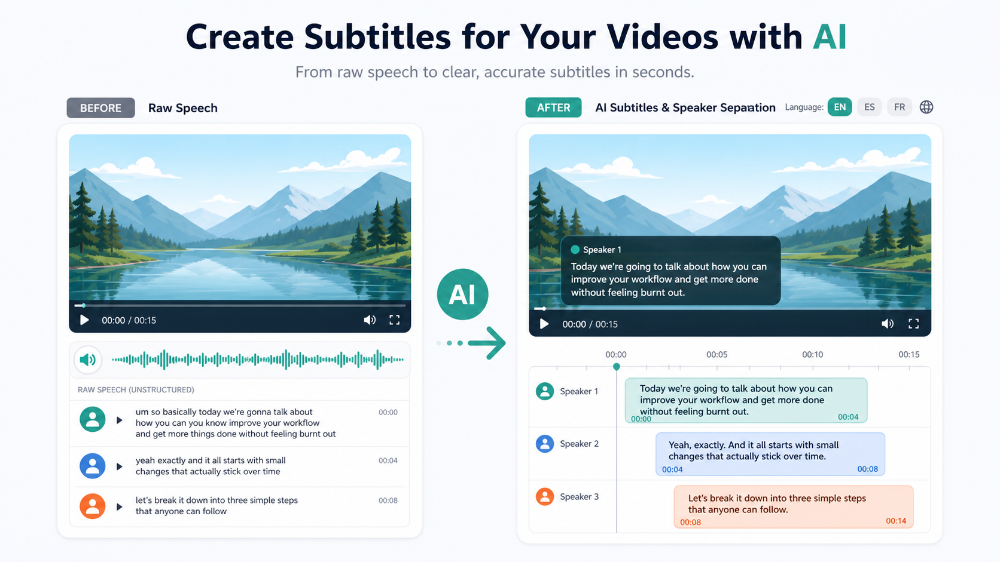

Промтзилла
Субтитры должны быть короткими и читабельными: зритель не успевает читать длинные абзацы поверх видео.

Пошаговая инструкция
- 1Загрузи видео или аудио.
- 2Попроси расшифровку с таймкодами.
- 3Укажи формат субтитров: SRT, VTT или текстовый список.
- 4Попроси делать строки короткими и не ломать фразы в неудобных местах.
- 5Проверь имена, термины и синхронизацию с видео.
Какой результат просить
Хороший файл субтитров содержит точные таймкоды, короткие строки и понятное разделение спикеров. Для старта можно использовать Study24 AI: добавь исходник, цель и ограничения, а затем попроси вариант для публикации.
Промт
RU
Создай субтитры для этого видео. Нужно: — распознать речь; — сохранить таймкоды; — разделить спикеров, если их несколько; — убрать явные повторы и слова-паразиты, но не менять смысл; — сделать короткие строки, удобные для чтения на экране; — подготовить результат в формате SRT. Если слово или имя распознано неуверенно, пометь его как [уточнить].
EN
Create subtitles for this video. Requirements: — transcribe the speech; — keep timestamps; — separate speakers if there are several; — remove obvious repetitions and filler words without changing the meaning; — make short lines that are easy to read on screen; — prepare the result in SRT format. If a word or name is uncertain, mark it as [verify].
Важно
Субтитры почти всегда требуют ручной вычитки: одна ошибка в термине может испортить весь фрагмент.
Теги